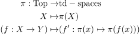
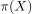
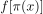
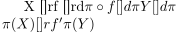
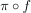

functor from Top to the category of totally disconnected space
1. Proposition
Given category Top, there exists a covariant functor to the category of totally disconnected spaces

where  is equipped with the quotient topology
2. Proof
2.1. welldefined
follows from image of a connected set connected, as  is a subset of a unique connected component
2.2. continuous
By construction, we get a commutative diagram

where  is continuous as composition of continuous maps and  by universal property of a quotient topology
by universal property of a quotient topology
2.3. identity and composition
- follows immediate